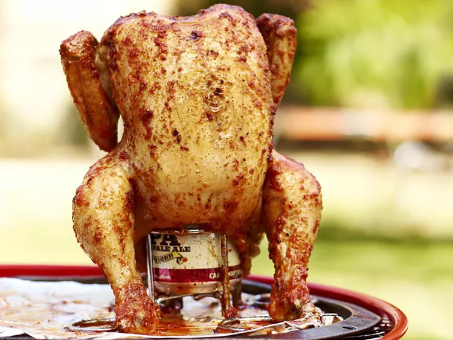

Home
Beer butt chicken

Description
For this beer butter chicken, all you need is a whole chicken, beer, butter, and seasonings. The chicken is seasoned and slowly cooked on the grill. This is a bit unorthodox, but the end result is moist and flavorful.
Ingredients
- 1 cup butter, divided
- 2 tablespoons garlic salt, divided
- 2 tablespoons paprika, divided
- salt and pepper to taste
- 1 (12 fluid ounce) can beer
- 1 (4 pound) whole chicken